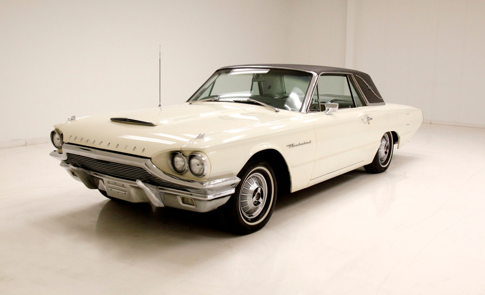

Ford Thunderbird 1964
O Ford Thunderbird é um automóvel esportivo icônico da Ford, lançado em 1954. Ao longo das décadas, ele evoluiu, passando de um conversível de dois lugares para versões com mais lugares e configurações diferentes, sempre com foco em design e desempenho. Tornou-se um símbolo de luxo e desempenho, com sua história marcada por inovações e adaptações aos gostos do público.
NASCAR
O Thunderbird tem uma longa tradição na NASCAR,
